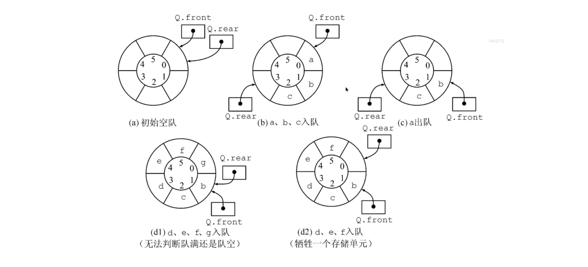
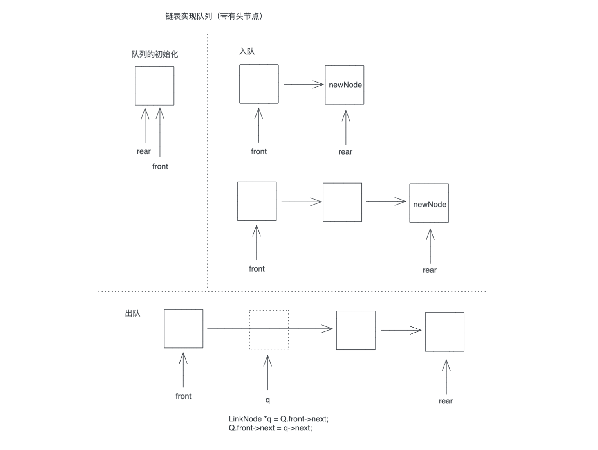
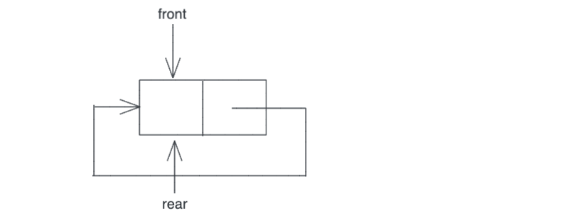
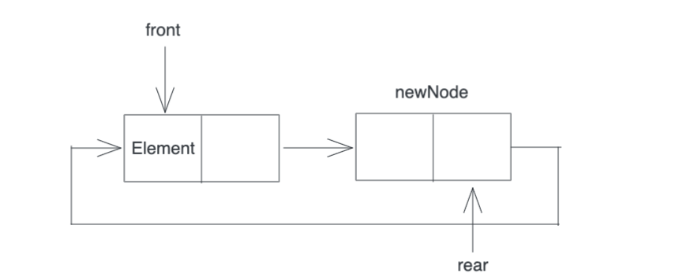
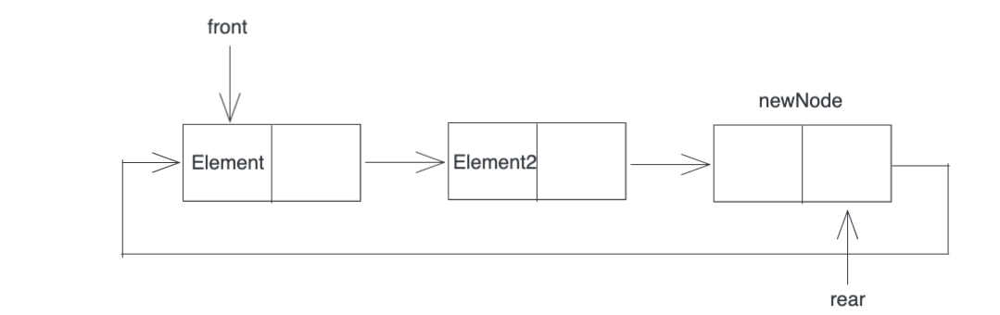
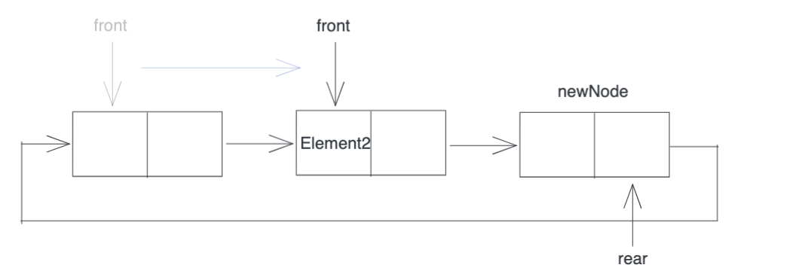
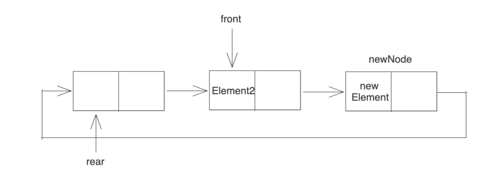

队列
队列是一种操作受到约束的线性表，只允许在表的一段进行插入，在表的另一端进行删除
向队列中插入元素成为入队，删除元素称为出队
1. 循环队列

在循环队列中判断队列是否已经满
牺牲一个位置的存储单元为空
如果 rear + 1 == front
即队尾的指针+1等于队头 时，循环队列已满
再次需要注意：
front指向的位置总是存有元素，而且是先入队的元素
rear指向的位置没有元素，rear总是指向最后一个元素的下一个位置
2.顺序表实现循环队列
int main() {
SqQueue SQ;
bool res;
ElemType element;
InitQueue(SQ);
EnQueue(SQ,1);
EnQueue(SQ,2);
EnQueue(SQ,3);
DeQueue(SQ,element);
printf("DeQueue->%d\n",element);
DeQueue(SQ,element);
printf("DeQueue->%d\n",element);
return 0;
}
#define MaxSize 5
typedef int ElemType;
typedef struct SqQueue{
ElemType data[MaxSize]; //数组，循环队列最存储MaxSize-1个元素
int front,rear; //队列头，队列尾
}SqQueue;
void InitQueue(SqQueue &Q)
{
Q.front = Q.rear = 0; //初始化队列
}
bool isEmpty(SqQueue Q)
{
if(Q.front == Q.rear)
{
return true;
}
return false;
}
2.1 入队
bool EnQueue(SqQueue &Q,ElemType x)
{
if ((Q.rear+1) % MaxSize == Q.front)
{
return false; //队列满，不能入队
}
Q.data[Q.rear] = x;
Q.rear = (Q.rear + 1) % MaxSize; // 添加完一个元素以后，队尾向后移动一个单位
return true;
}
2.2 出队
bool DeQueue(SqQueue &Q,ElemType &x)
{
if(Q.front == Q.rear) // 判断队列是否为空
{
return false;
}
x = Q.data[Q.front];
Q.front = (Q.front + 1) % MaxSize;
return true;
}
3.链表实现队列

采用带有头节点（front）的单链表存储队列，也可以实现先入先出，每次删除第一个节点（front指针所指向的节点）
int main() {
LinkQueue Q;
InitQueue(Q);
EnQueue(Q, 1);
EnQueue(Q, 2);
EnQueue(Q, 3);
EnQueue(Q, 4);
bool res;
ElemType element;
res = DeQueue(Q, element);
if (res) {
printf("deQueue success element=%d\n", element);
} else {
printf("deQueue unsuccess\n");
}
return 0;
}
3.1 链表队列初始化
#include <stdio.h>
#include <stdlib.h>
typedef int ElemType;
typedef struct LinkNode {
ElemType data;
struct LinkNode *next;
} LinkNode;
typedef struct {
LinkNode *front, *rear;
} LinkQueue;
//带头节点的链表实现队列
void InitQueue(LinkQueue &Q) {
Q.front = Q.rear = (LinkNode *) malloc(sizeof(LinkNode));
Q.front->next = NULL;
}
3.2 入队
void EnQueue(LinkQueue &Q, ElemType x) {
LinkNode *newNode = (LinkNode *) malloc(sizeof(LinkNode));
newNode->data = x;
newNode->next = NULL;
Q.rear->next = newNode;
Q.rear = newNode;
}
3.3 出队
bool DeQueue(LinkQueue &Q, ElemType &element) {
//队列为空
if (Q.rear == Q.front) {
return false;
}
LinkNode *q = Q.front->next;
element = q->data;
Q.front->next = q->next;
if (q == Q.rear) {
Q.rear = Q.front;
}
free(q);
return true;
}
3.Queue-2019-42
题目
42.（10分）请设计一个队列，要求满足：1.初始时队列为空；2.入队时，允许增加队列占用空间；3.出队后，出队元素所占用的空间可以重复利用，即整个队列所占用的空间只增不减；4.入队操作和出队操作时间复杂度为O（1）。
回答以下问题：
- 该队列选择链式存储还是顺序存储？
- 画出队列的初始状态，并给出判断队空和队满的条件
- 画出第一个元素入队后的队列状态
- 给出入队操作和出队操作的基本过程
(1)链式存储
(2)初始状态
画出队列的初始状态，并给出判断队空和队满的条件
初始时，创建只有一个空闲节点的链表，rear，front指针都指向第一个空闲的节点

新增一个元素之后：

队空的判定条件：front=rear
队满的判定条件：front=rear->next
(3)第一个元素入队

在插入一个元素之后，一定要确保当前节点的next是下一个空节点

(4)入队和出队操作
出队操作：
移除front指针指向的节点存储的元素，并将front指针向前移动front=front->next

入队操作：
将新元素Element放在Element2之后，同时将rear指向之前移除元素的节点

入队操作:
if(front=rear->next) // 队满
{
在rear之后插入一个新节点
}
入队元素保存在rear所指向的节点中;
rear=rear->next;
出队操作:
if (front == rear) //队空
{
出队失败return;
}
// 如果对列不为空
取front所指向的元素element，front前移 front=front->next;
return element;
4.链表实现循环队列
4.1 定义
#include <stdio.h>
#include <stdlib.h>
typedef int ElemType;
typedef struct LNode {
ElemType data;
struct LNode *next;
} LNode, *LinkList;
void CircleQueue(LinkList &front, LinkList &rear) {
//进行初始化
front = (LinkList) malloc(sizeof(LNode));
rear = front;
rear->next = front;
//入队两个元素
EnQueue(front,rear,3);
EnQueue(front,rear,4);
//出队
Dequeue(front,rear);
Dequeue(front,rear);
Dequeue(front,rear);
}
int main() {
LinkList front, rear;
CircleQueue(front, rear);
}
4.2 入队
void EnQueue(LinkList front, LinkList &rear, ElemType val) {
LinkList pnew;
if (rear->next == front) {
//rear当前是空节点，如果rear->next== front，说明队列满
//申请新节点
pnew = (LinkList) malloc(sizeof(LNode));
//插入的元素放在rear节点中，而不放在新申请的空节点中
rear->data = val;
rear->next = pnew;
pnew->next = front;
rear = pnew;
} else {
//队列不满，直接放值，rear后移一个节点
rear->data = val;
rear = rear->next;
}
}
4.3 出队
void Dequeue(LinkList &front,LinkList rear)
{
if (front==rear)
{
printf("empty queue\n");
}else{
printf("Dequeue->%d\n",front->data);
front=front->next;
}
}